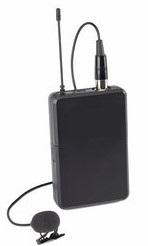

STEM is a acronym which stands for science, technology, engineering, and mathematics.STEM fields are some of the fastest growing fields. It is estimated that there will be 55 million new jobs in STEM fields by 2020.
For one of the fastest-growing industries, STEM fields are disproportionally male to female. This is a visible problem because every industry needs some form of diversity, whether it's People of Color or women. One example, a wearable microphone for speaker.

As you can see, they most likely did not have a female on the production team because they didn't design this for someone who does not have any pockets do to wairing a dress. To have products that work for all diversity is key and one step towards diversity is more woman in STEM fields.